One page. Five heroes.
Karoo Fun takes over a whole ride page. Four values up top, your elevation profile below. No stiff boxes, just hand-drawn lines, halftone dots and big white numbers with a thick outline that you can read even in blazing sunshine.
Speed
Green when you're faster than your average, red when you're not. Your average sits big underneath. Faster? A hare gallops along. Slower? A fat snail creeps by.
Temperature
With one decimal place. Below 0 °C the tile freezes over, above 25 °C it turns into a furnace. Plus the real sky above you: sun, sunset, moon, clouds, rain and a windsock.
Heart rate
The tile changes colour with your heart rate zone. The heart beats along, and from zone 4 it really pounds. You set the zones yourself.
Distance
In km with two decimals. A little bike rolls towards the next kilometre marker while the road slides past.
Elevation profile
The profile you've ridden grows live, coloured by gradient. Plus big numbers for altitude, climbing and the current gradient. A flag flutters on the summit, and your bike sits right on the slope: sweating uphill, hair in the wind downhill.
Brrr! Lovely! Phew, hot!
Something moves every second: flakes fall, icicles drip, flames flicker, the sun spins. The numbers themselves stay still, so you can read them even on gravel. And up in the speed field: a hare when you're above your average, a snail when you're not.
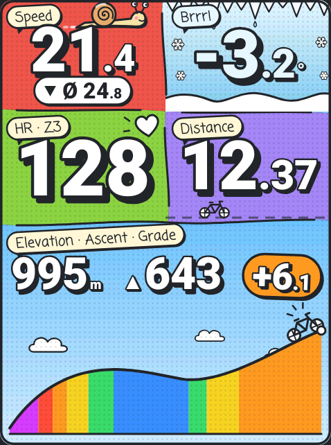
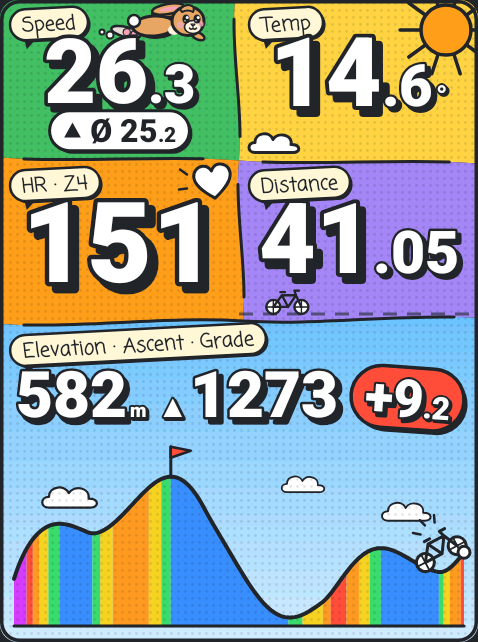
The sky above you. For real.
From your GPS position and the time of day, Karoo Fun works out where the sun is. At noon it blazes, in the evening it sinks red behind the hills, and at night you get stars and the moon in its actual phase. All of that works without a phone, too.
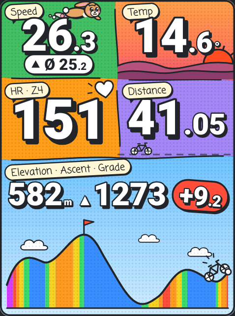
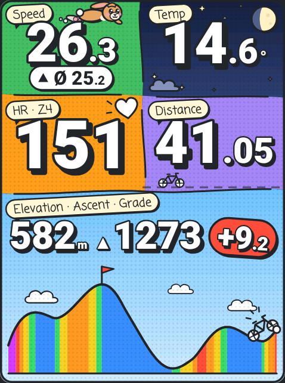
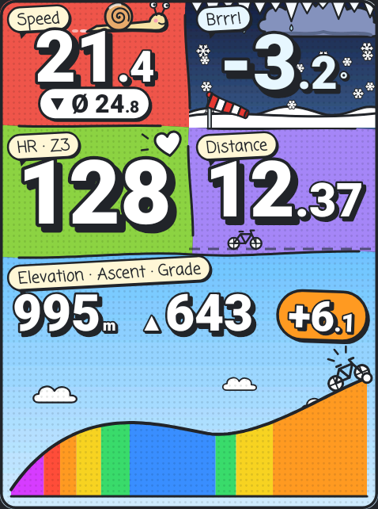
With your phone connected via the companion app, the current weather joins in every 15 minutes: clouds drift across the sun, rain pours down, lightning flashes in a thunderstorm. The red-and-white windsock shows how hard it's blowing and, thanks to your GPS heading, whether you've got a tailwind, headwind or crosswind.
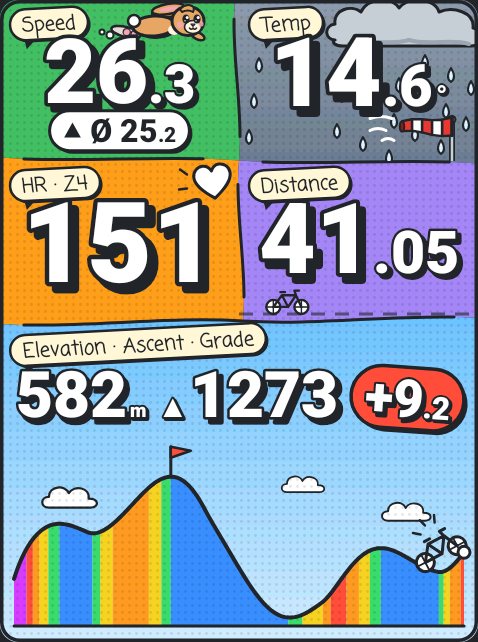
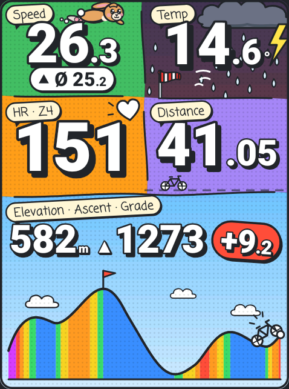
Getting wet? One glance tells you.
The rain radar is a tile of its own that you can put on any ride page. It shows the radar from the German Weather Service (DWD) in the familiar DWD colours on a grey map of Germany, with you as a dot in the middle.
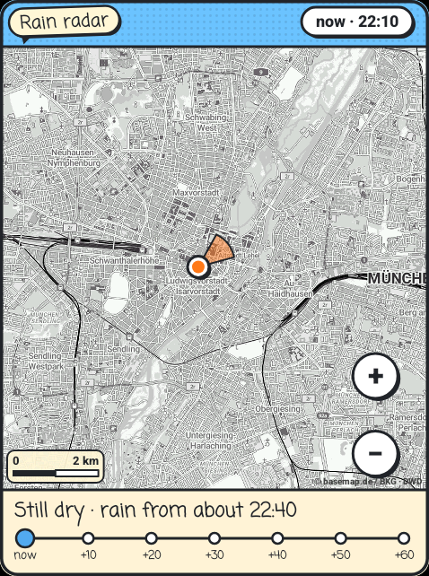
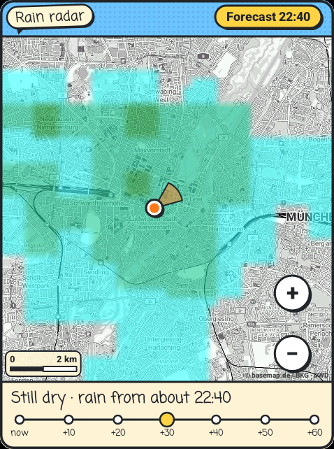
How it works
- Zoom with the big + and − buttons: 10, 25 or 50 km. The scale bar bottom left adjusts itself.
- Forecast for the next hour in 5-minute steps, as an animation.
- Tap the timeline to step one frame ahead. After 20 seconds the animation starts again.
- Heads-up for exactly where you are, e.g. “Still dry · rain from approx. 15:40”.
- Refreshes in the background every 5 minutes. Swipe to the page and it's all there already.
ℹ️ Radar and map cover Germany and border regions. The data comes via your phone (companion app) or Wi-Fi. Over Bluetooth that's slow: at startup it takes about a minute until everything has arrived. Using your phone's hotspot over Wi-Fi is much faster.
Build your own comic page.
Every field is also available on its own. Set up a page with 2 × 4 fields on your Karoo and pick what goes where. All the fields from the Comic Cockpit are there, plus a few new ones.
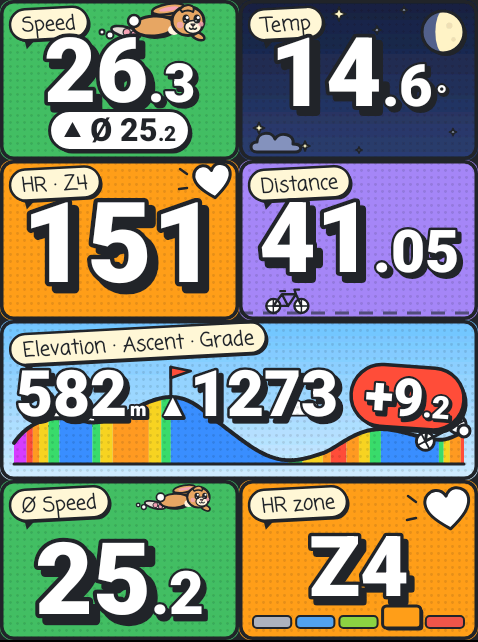
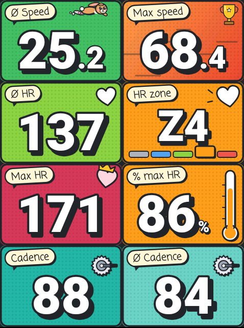
14 fields, sorted by category
- Speed: now, average with hare or snail, max with a trophy that sparkles while you're going that fast.
- Distance with a rolling bike and elevation as a profile (looks best in a wide field).
- Heart rate: now, average, zone with zone ladder, max with a crown, % of max HR with a thermometer.
- Cadence: now, average and max. The chainring spins along: orange when you're grinding, purple from 100 up.
- Weather: temperature under the real sky.
ℹ️ On the Karoo you'll find the fields under Karoo Fun, e.g. “Speed · Avg” or “Heart rate · Zone”. The heart rate zones come from the app settings, just like in the Comic Cockpit.
Watts, gears, rain & sun.
13 new single fields for your own pages. Some need a sensor; the weather and sky fields run on what the app already has.
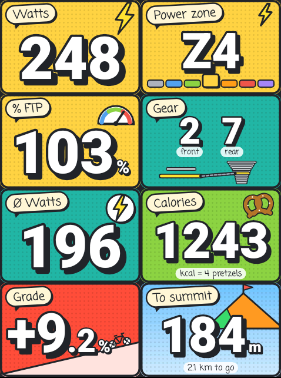
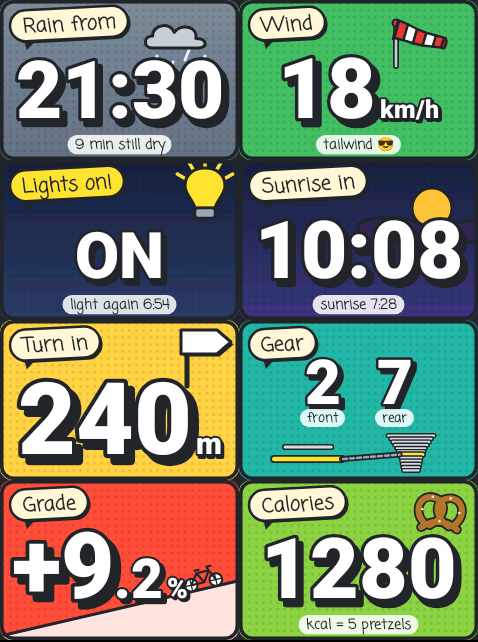
What's new
- Power: watts with a lightning bolt, average, zone with a zone ladder, % FTP with a speedometer (power meter).
- Gear: front and rear, plus the drivetrain seen from above. Cross-chained? It turns orange (Di2/AXS, up to 2 × 14).
- Grade with a bike on the ramp, to the summit and next turn with a route.
- Rain from the radar, wind with a windsock, lights on in and sunset in.
- Calories converted into pretzels. 🥨
When it goes off, it goes off big.
Three moments take over the whole screen for up to 3 seconds, at 5 frames per second. A fixed, calm tile with your values stays put at the bottom, so you can still read everything.
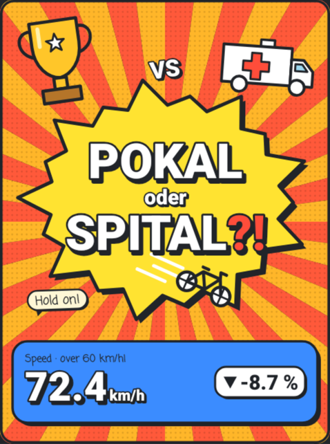
🏆 Pokal oder Spital?! (Trophy or hospital?!)
Trophy versus ambulance, flashing blue lights included. Your bike shoots down the slope while a speech bubble yells “Hold on!” or “Fingers on the brakes!”.
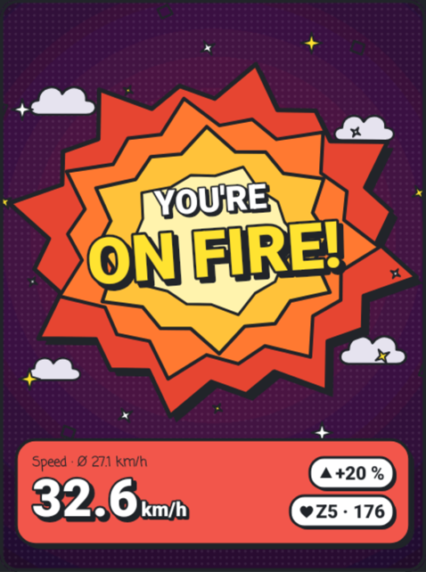
🔥 You're on fire!
A fireball ignites, a blinding flash, then a comic explosion fills the page. Sparks fly, smoke billows, and right in the middle “YOU'RE ON FIRE!” lights up.
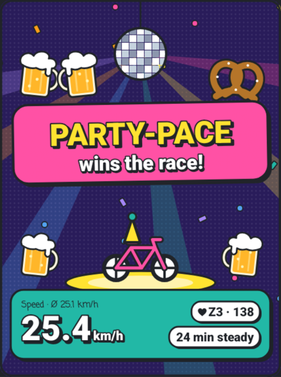
🍺 Party-Pace wins the race!
The disco ball drops in, spotlights sweep, confetti rains down, beer steins clink. “Cheers!” Your bike dances on stage in a party hat.
You decide when it goes boom.
Open the settings right on the Karoo under Settings › Apps › Karoo Fun › Open. Every change applies instantly.
- Your own heart rate zones from your max HR, every boundary adjustable, or the zones from your Karoo profile
- Cooldown for all takeovers: at most one every 25 min (adjustable), so it stays special
- Duration of the takeovers: 1 to 3 seconds
- Each takeover on/off individually, with its own thresholds for speed, gradient, heart rate zone and time
- Preview button to watch every takeover from your sofa
- Language: German, English or automatic, just like your Karoo
- Shifting: how many chainrings and cogs the gear field draws, up to 2 × 14
- Version number top right, so you can see which version is running on your Karoo
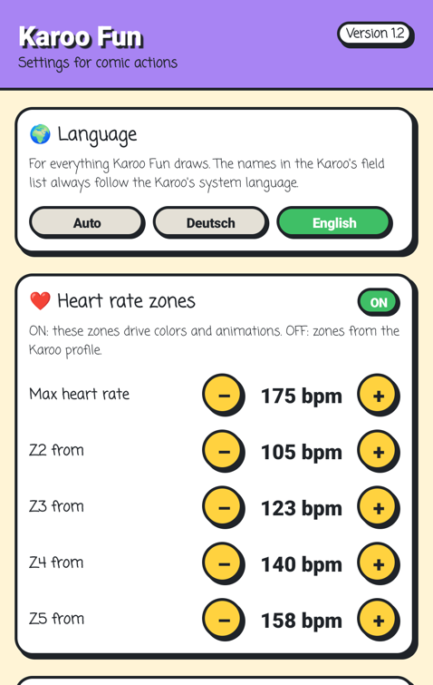
Lots of show, little power.
per second the page is redrawn. That's how often new readings arrive anyway.
is the longest a comic takeover lasts. The Karoo flips through the frames by itself, the app doesn't have to push anything.
cooldown between takeovers. The display and GPS remain the big power hogs.
every 5 minutes for the radar, a few hundred bytes every 15 minutes for the weather. Maps stay stored on the Karoo.
Comic Cockpit in 4 steps
- Get the app onto your Karoo 3. How that works is explained step by step below, even if you've never done anything like it.
- On the Karoo, create a ride page with one data field and pick Karoo Fun › Comic Cockpit there. Fancy the radar? Add another page with Karoo Fun › Rain Radar. Or build your own page from the single fields.
- Set your max heart rate and the takeovers under Settings › Apps › Karoo Fun › Open.
- Tip: turn off the button hints under Settings › Button icons to give the comic even more room.
Not a tech person? No problem!
Karoo Fun isn't in the Karoo app store (yet). So you copy the app once from your computer to your Karoo using a USB cable. The first time takes about 15 minutes, and you can't break anything. Grab a coffee and just follow along step by step.
What you need
- Your Hammerhead Karoo 3, charged
- A computer running Windows or macOS
- A USB-C cable that can carry data. Ideally the one that came with your Karoo. Some cheap cables can only charge, and those won't work.
- The file karoo-fun-1.4.apk, which is the app itself. Download it from github.com/HannoP1983/karooFun › Releases under “Assets”. If there's already a newer version, it will have a higher number; use that number in the commands below as well.
Unlock “Developer options” on the Karoo
It's a hidden menu item. Don't worry, it won't turn you into a hacker, and your Karoo keeps working completely normally.
- On the Karoo, open Settings and scroll all the way down.
- Tap About.
- Find the Build number entry and tap it 7 times in quick succession.
- A message like You are now a developer! pops up. Done!
Already see Developer options at the bottom of Settings? Then this step is already done.
Turn on USB debugging
This lets your computer put an app onto the Karoo.
- Go back to Settings and scroll all the way down again.
- Tap Developer options.
- Switch on USB debugging and confirm the prompt with OK.
Get the “adb” program onto your computer
adb is a small, free tool from Google that lets a computer talk to Android devices. On the inside, the Karoo is an Android device.
🪟 Windows
- In your browser, open Google's “SDK Platform-Tools” page:
developer.android.com/tools/releases/platform-tools - Click “Download SDK Platform-Tools for Windows”, accept the terms, download.
- In your Downloads folder, right-click the ZIP file › Extract All… to unpack it.
- You now have a folder called platform-tools. We'll need it again in a moment.
🍎 Mac
- In your browser, open Google's “SDK Platform-Tools” page:
developer.android.com/tools/releases/platform-tools - Click “Download SDK Platform-Tools for Mac”, accept, download.
- Double-click the ZIP file in your Downloads folder. It unpacks itself.
- You now have a platform-tools folder inside Downloads.
A trick that makes everything easier: copy the file karoo-fun-1.4.apk into that very platform-tools folder. Then everything is in one place.
Open a command window in the right folder
Now comes the part that looks like hacking. It isn't, though: you just type two lines.
🪟 Windows
- Open the platform-tools folder in File Explorer.
- Click into the address bar at the top (where the path is shown).
- Type cmd and press Enter.
- A black window opens. That's the “Command Prompt”.
🍎 Mac
- Open the Terminal app (press Cmd + Space, type “Terminal”, Enter).
- Type this line and press Enter:
cd ~/Downloads/platform-tools
Plug in the Karoo and give permission
- Switch on the Karoo and connect it to the computer with the USB cable.
- In the black window, type this line and press Enter:
🪟 Windows
adb devices
🍎 Mac
./adb devices
- The Karoo now asks Allow USB debugging?
Tick “Always allow from this computer” and tap OK. - Type the same command again. Now you'll see a long number followed by the word device. 🎉
It says unauthorized? Then you haven't confirmed the prompt on the Karoo with OK yet. Nothing shows up at all? Check “Help, it's not working” below.
Install the app
Type this line and press Enter:
🪟 Windows
adb install -r karoo-fun-1.4.apk
🍎 Mac
./adb install -r karoo-fun-1.4.apk
After a few seconds the word Success appears. That's it, the app is on! 🥳
Got a new version later? Exactly the same line again, with the new file. Your settings are kept.
Had Karoo Fun installed before version 1.1 and you get INSTALL_FAILED_UPDATE_INCOMPATIBLE? The old version was signed differently. Uninstall it once (see “Help, it's not working”) and it'll work. You'll have to enter your settings again afterwards.
Put the Comic Cockpit on a ride page
- Unplug the cable.
- On the Karoo, open the Pages in your ride profile and add a new page (or edit an existing one).
- Pick the layout with just one single field. The cockpit needs the whole page.
- Tap the field and select Karoo Fun › Comic Cockpit from the list.
- For the rain radar, add another page the same way and choose Karoo Fun › Rain Radar. Also looks best as the only field.
- Your own page from single fields: pick the 2 × 4 field layout and fill each field yourself, e.g. Karoo Fun › Speed · Avg or Karoo Fun › Heart rate · Zone.
- Save, start your ride, have fun. Zap! 💥
Setup and final tips
- App settings: on the Karoo, Settings › Apps › Karoo Fun › Open. First thing: enter your max heart rate. Hold + and – to count up or down quickly. The back button at the bottom left of the Karoo gets you out again.
- Weather and radar: need a connection, so either the Hammerhead companion app on your phone (Bluetooth on) or Wi-Fi on the Karoo.
- Which version? It's shown top right in the app settings.
- More room: turn off the button hints under Settings › Button icons. The grey bar at the bottom edge disappears.
- Turn USB debugging off again? You can switch it off in Developer options after installing. Just turn it back on for future updates.
- Getting rid of the app: Settings › Apps › Karoo Fun › Uninstall.
🆘 Help, it's not working
“adb” not found / “command not found” / “is not recognized as an internal or external command”
The black window is in the wrong folder. Do step 4 again. On Windows in PowerShell instead of cmd it has to be .\adb devices.
No device shows up for adb devices
It's almost always the cable: try a different one, ideally the original. Use a different USB port on the computer.
Check that USB debugging (step 2) is really on. Unplug the Karoo and plug it back in.
“unauthorized”
Confirm the “Allow USB debugging?” prompt on the Karoo with OK. No prompt appeared? Unplug the cable and plug it back in.
“INSTALL_FAILED_UPDATE_INCOMPATIBLE”
A differently signed version is already installed. Remove it first with adb uninstall de.karoofun.karoo (Mac: ./adb …), then repeat step 6.
Mac says the program is from an “unidentified developer”
In System Settings › Privacy & Security, scroll all the way down, click Allow Anyway next to adb and type the command again.